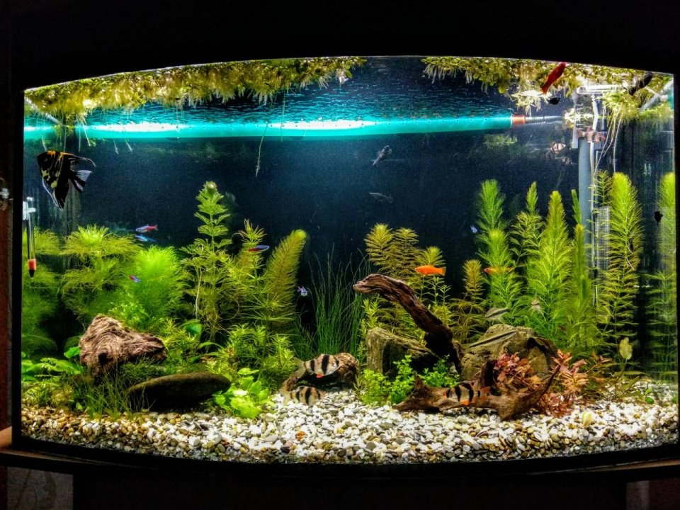

25.12.2017
Кінець грудня - приблизно 1,5 місяці з моменту запуску. Зробив саморобну флейту. Не влаштовував сильний струмінь води яка йшла з фільтру. Довгостеблеві рослини від сильної течії стелилися паралельно ґрунту які б варіанти направлення течії я не обирав би. Єдине, що не вдалося знайти трубки нейтрального кольору – тому зупинився на відрізку шлангу блакитно-зеленого отрутного кольору )) Тепер вихід води був під її поверхнею в напрямку фронтального скла. Біля задньої стінки відповідно вже сповільнена течія йшла у гору – рослини тепер стоять вертикально! :)
Але з’явилися бурі водорості. Не вистачало світла. А світло в мене було ой-ой! Я намагався виліпити щось пристойне з побутових ЛЕД-лампочок. Накрутив 7 шт. максимальної потужності, кришка була гарячою, а світла явно було мало. Я дозрів до нормального сучасного світла. Замовив світильник від RIVAL AQUA.